슬라이드에 연결된 실제 로봇·시뮬레이션 영상 17개.
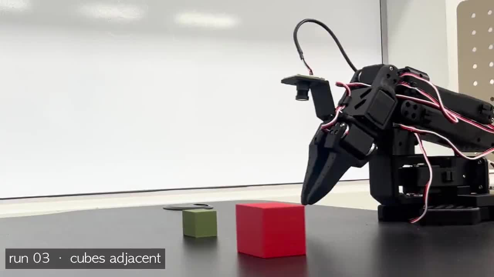
[성공 롤아웃 — 파지 후 목표 위에 적재]
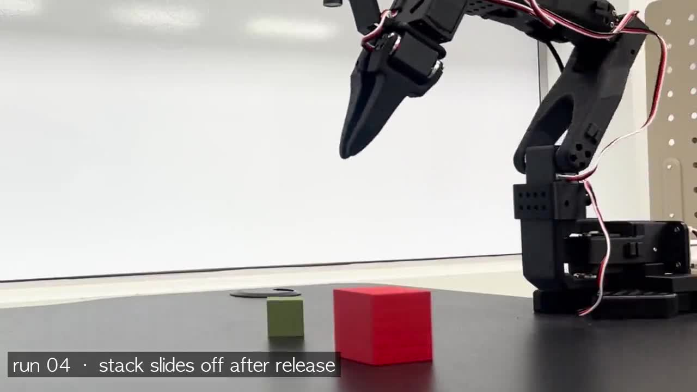
[실패 — 물체를 놓은 직후 적재물 붕괴]
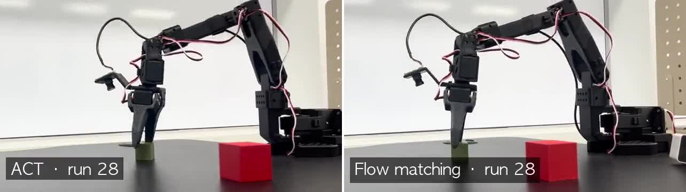
[같은 배치 · 두 정책 롤아웃 — ACT | flow matching]
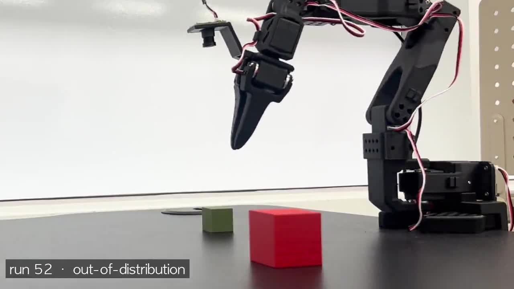
[분포 밖 실패 — 시연 범위를 벗어난 배치]
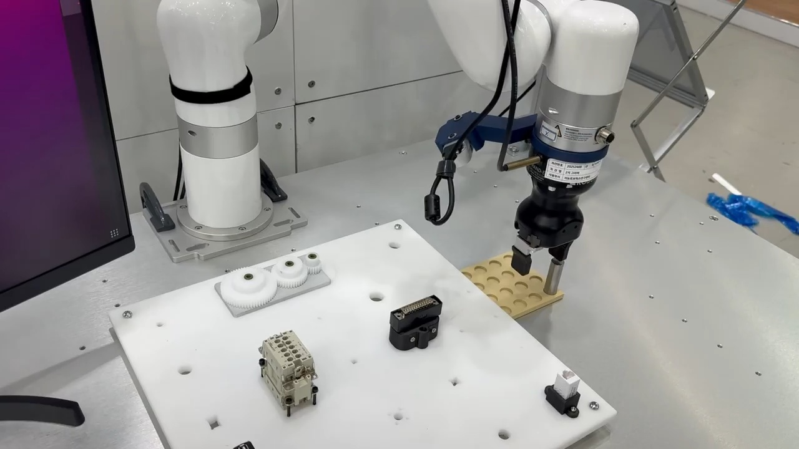
[AutomationWorld 2026 라이브 시연]
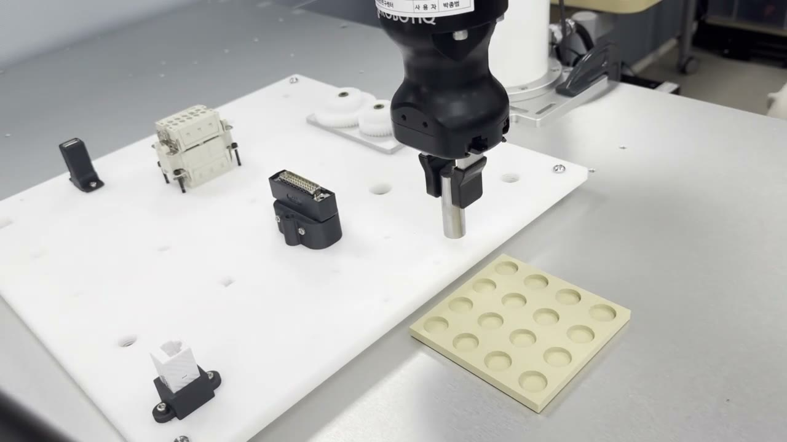
[학습 정책 삽입 롤아웃 — 여러 커넥터 · 배속]
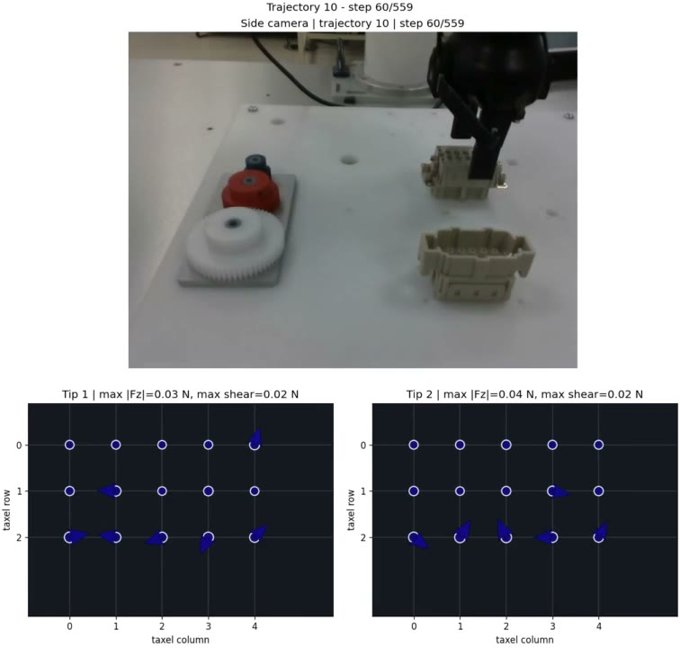
측면 카메라 + XELA 접촉력 분포 · 팁 2개
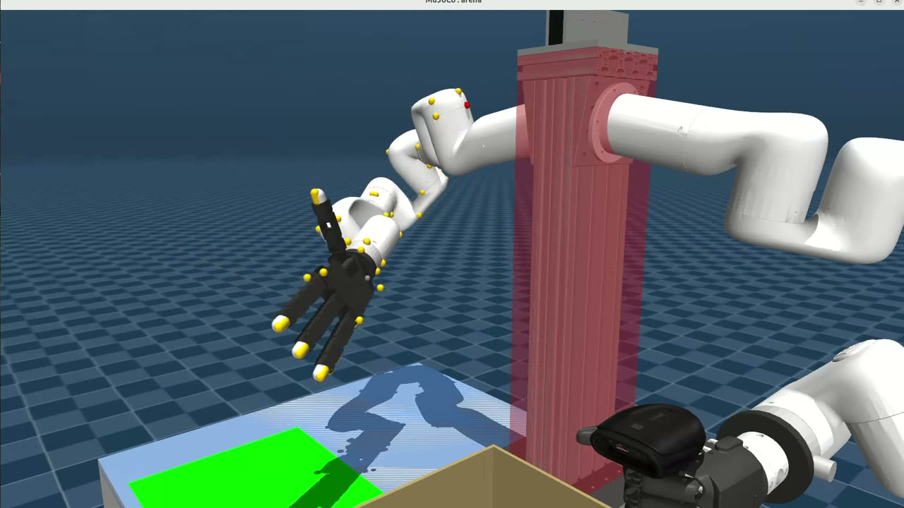
[MuJoCo 검증 — 몸통 정지 → 테이블 정지]
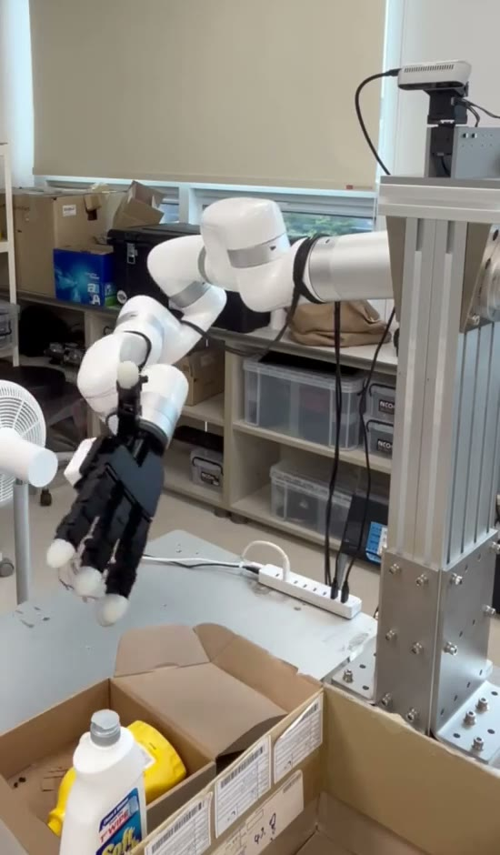
[실기 검증 — 몸통 정지 → 테이블 정지]
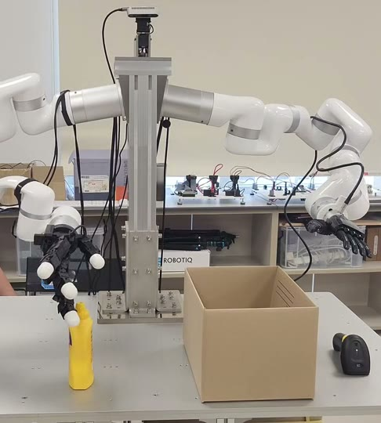
[대조군 · Critic = Actor 관측 — 파지 실패]
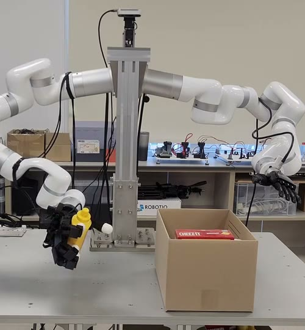
[Asymmetric · Critic에 참값 추가 — 파지 후 목표 이동]
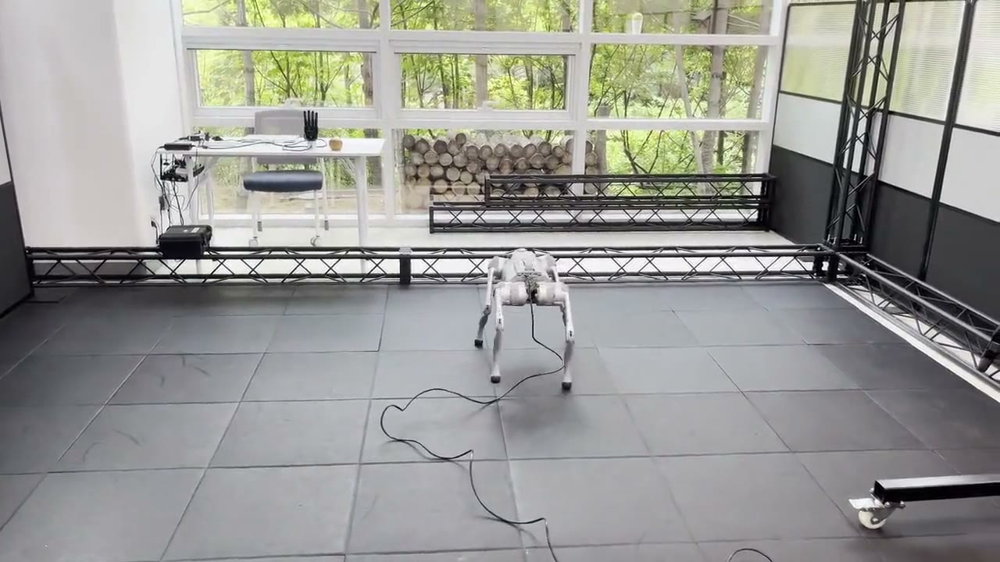
[튜닝 전 — 시뮬레이션에서 그대로 전이]
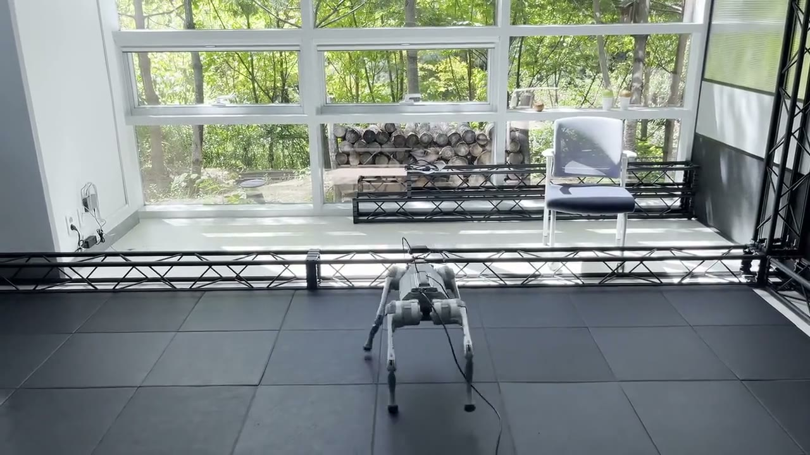
[dynamics fine-tuning 후 — 동일 world model]
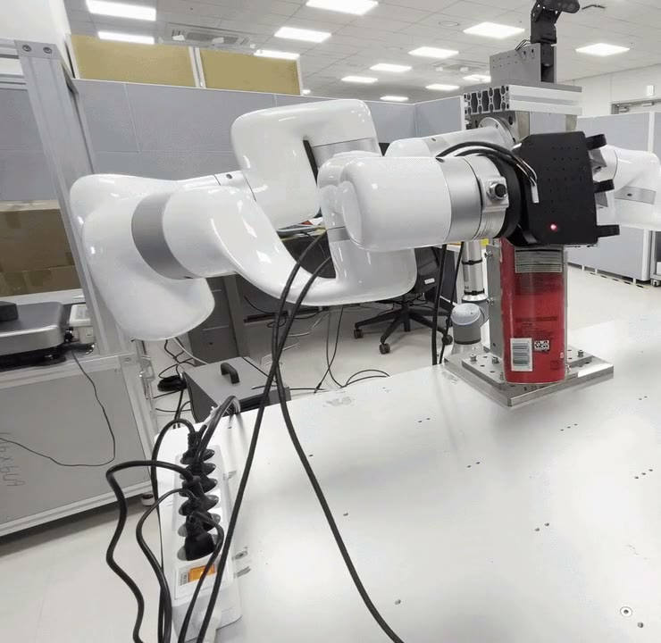
[보상 없음 — 외란에 물체 낙하]
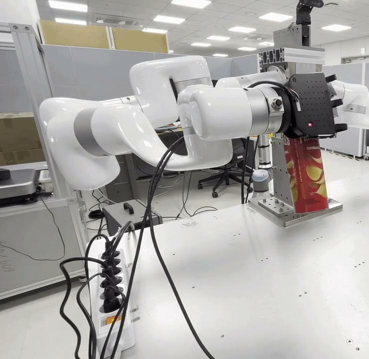
[RBFNN 보상 — 같은 외란에서 파지 유지]
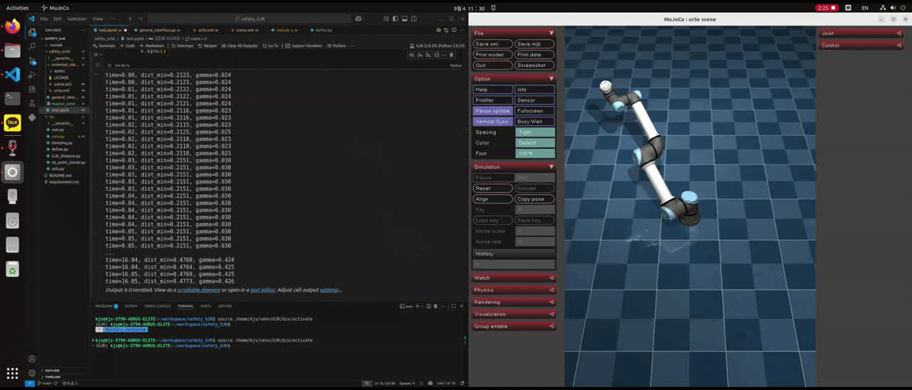
[시뮬레이션 — 이동 중 박스가 갑자기 생성되면 즉시 인지, 임계 거리 안에서 속도 감쇠]
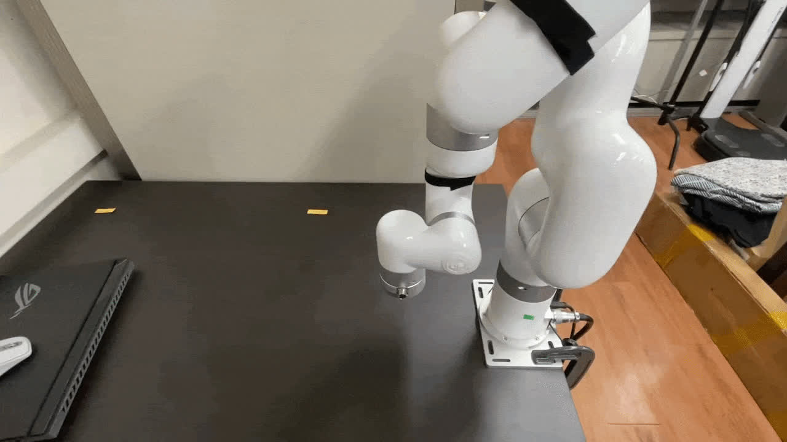
[실물 xArm6 — 동일 제어기, 전용 근접 센서 없이]